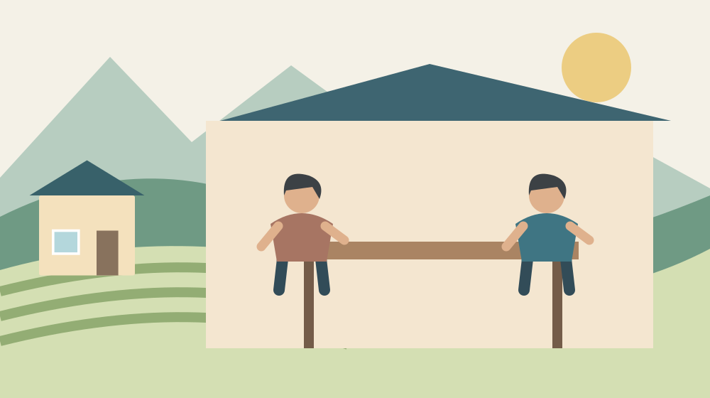

森町のDV相談｜町と県の相談先を知る
Q. 森町でDVのことを、どこに話せますか？
A. 森町では健康こども課こども家庭係や県の相談窓口にDVの相談ができます。町の電話は0538-86-6330、平日8時30分～17時15分です。夜間などはDV相談プラスも案内されています。身の危険が迫る場合は110番へ。相談前に離婚や転居を決める必要はありません。
子どもへの虐待が疑われるときの189への伝え方は、児童虐待相談の記事で整理しています。
相談の入口は、暮らしを決め直す前にも使える
森町で家のこと、子どものこと、仕事のことを抱えながら、配偶者やパートナーとの関係に悩んでいる方へ。普段どおりに暮らして見えることと、家の中で安心できていることは別です。話す時間や場所を確保するだけでも、負担があることを出発点にしたいと思います。
大石浩之（磐田市／不動産業）です。私はDVの専門相談員ではありません。住まいと家族の段取りに関わる立場から、森町で使える公的な相談先を整理します。相手の行動をその場で判定したり、転居を勧めたりする記事ではなく、専門職へつながる入口の案内です。
身の危険が迫っている場合は、この記事を読み終えるより先に110番へ連絡してください。安全な場所へ移れる状況なら安全を優先し、相手との話し合いや証拠集めのためにその場へとどまる必要はありません。緊急の対応と、落ち着いて暮らしを相談する窓口は役割が違います。
私は、相談は離婚や転居の結論を出してから使うものではない、と考えます。何が起きているか自分でも整理できない段階から、相談先を知る意味があります。家を出るか、契約をどうするかという話を、本人の気持ちより先に進めないことが、住まいを扱う者の線引きです。
森町が案内するDVは、身体への暴力だけではない
森町の「児童虐待・DV」は、配偶者やパートナーなど親密な関係にある人からの暴力を説明しています。身体への暴力だけでなく、さまざまな形態があると案内しています。殴られたことがないという理由だけで、相談の対象から自分を外す必要はありません。
暴力という言葉を使うこと自体に、ためらいがある方もいると思います。相談するときは、制度の用語を使いこなす必要はありません。「家の中で怖い」「お金のことで自由に動けない」「相手の反応が気になり電話できない」など、困っていることを短い言葉で伝える方法があります。
町の案内は、子どもの前で家族に暴力を振るう面前DVも、子どもへの心理的虐待の例に挙げています。大人同士の問題としてだけ扱えない場合があるということです。子どもがいる家では、子どもへの影響も含め、相談員と状況を整理してください。
私は、家族や近所の人が独自に原因を決め、当事者同士の仲直りを急がせるのは避けたいと考えます。家の外から見える様子だけで、安全かどうかは判断できません。本人が話せる範囲を聞き、相談先につながる選択肢を渡す方が、不動産業者としてできることの範囲に合っています。
町の相談先：健康こども課こども家庭係
森町のDV相談一覧には、健康こども課こども家庭係が掲載されています。電話は0538-86-6330です。受付時間は平日8時30分～17時15分で、祝日と年末年始を除きます。配偶者やパートナーからのDVについて、保健師等が相談に応じると案内されています。
2026年11月2日は月曜日ですが、翌11月3日は文化の日です。平日の番号を控えたから、翌日も同じ時間に話せるとは限りません。夜間や休日の相談先も一緒に見ておくと、電話し直せる時間が限られる人にとって選択肢になります。受付時間は利用前にも確認してください。
森町保健福祉センターの公式案内には、健康こども課や福祉課が入る複合施設と記載されています。ただし、施設の所在地を知ることと、その場へ安全に相談に行けることは別です。来所を考える場合も、可能なら先に窓口へ連絡し、相談方法を確認してください。
電話の最初に伝えたいのは、詳しい経緯だけではありません。「今は長く話せない」「折り返しはしないでほしい」「安全に話せる時間が限られる」といった連絡上の事情もあります。これは私からの段取りの提案です。窓口がどう対応できるかを、相談の冒頭で確かめる形にします。

県の相談先：町外の窓口にもつながれる
森町の一覧には、静岡県西部健康福祉センターの相談先も掲載されています。電話は0538-33-9217、平日9時～17時で、土日・祝日・年末年始を除きます。配偶者からの暴力など、女性の相談に女性相談員が対応する窓口として案内されています。
静岡県女性相談支援センターは054-286-9217で、町の一覧では9時～20時、祝日・年末年始を除くとされています。町と県で受付時間が同じとは限りません。仕事が終わってから話したい、昼間に時間を取りにくいという事情に合わせ、窓口を選ぶ材料になります。
町の案内には、男女共同参画センター「あざれあ」の男性相談も載っています。相談窓口によって対象や扱う内容が異なるので、性別や関係性だけで相談を諦めず、利用できる窓口を確認してください。全窓口が同一の支援を提供する、とこの記事で保証することはできません。
私は、相談先が町外にあることを、地域への遠慮と結びつけなくてよいと考えます。顔の見える地域だからこそ、身近な窓口に話すことが難しい場合もあります。町に相談するか県に相談するかは、本人が話せる条件を考えるための選択であり、地域を好きかどうかとは別の話です。
夜間や休日はDV相談プラスの案内を確認する
DV相談プラスは、森町の公式一覧にも掲載されている相談先です。電話番号は0120-279-889で、電話は24時間対応と案内されています。配偶者やパートナーから受ける暴力について、専門の相談員と考える窓口です。町役場の開庁時間とは分けて覚えておくとよい番号です。
DV相談プラスの公式サイトには、電話以外の相談方法も案内されています。文字で話す方が使いやすい方は、最新の受付案内を確認してください。電話が24時間だから、ほかの方法も同じ時間に即時の返事がある、とまでは読み替えないことです。
同じ端末を相手が使う、通話や閲覧の履歴を相手が確認するといった事情がある場合は、相談先の保存そのものが気になることもあります。連絡先を保存する行動を一律に勧めることはできません。使える端末や連絡方法を、安全が確保できる範囲で相談員に相談してください。
私は、記事を閉じるかどうかまで、読む人が決められる案内でありたいと考えます。最後まで読み切ったり、一覧を全部メモしたりする必要はありません。今、安全に確認できる番号が一つ分かれば、それだけでも相談の入口になります。家族や知人に見せることも義務ではありません。
良い点：一つの窓口だけに相談を縛られない
森町の公式一覧の良い点は、町の担当係と県の相談先、全国につながる相談先が同じページにあることです。私は、最初の窓口を自分一人で完璧に選ばなくても、話せる場所を探す材料になると考えます。平日の昼間に動けることを前提にしない入口があるのは助けになります。
相談先の電話と時間を並べて見られると、仕事や子どもの生活を支える方も、自分が話せる時間と照合できます。相談のためにまとまった外出ができない場合、電話という方法があることにも意味があります。ただし、安全に話せるかどうかは、時間表だけでは決まりません。
町の保健師等に話せる窓口は、子どもや家庭のことを含めて相談したい方の入口になります。住まい、生活費、子育ての問題が重なっているとき、一つずつ別の用語に直してから話すのは負担です。最初に今の困りごとを伝え、次にどこへつながるかを一緒に確かめられる案内を望みます。
2026年の「女性に対する暴力をなくす運動」は、内閣府の案内では11月12日～25日です。運動期間に相談先を知る機会が増えることは良い点です。ただし、その日まで待たなければ相談できないわけではありません。十一月の案内を、今日の連絡先を確認するきっかけとして使えます。
注文したい点：電話番号の先にある不安も案内したい
相談先の一覧だけでは、相談する人の不安が全部なくなるわけではありません。私は、折り返しの連絡をどうするか、来所が難しい場合に何を使えるかを、初回に確かめられる案内があると助かると考えます。本人に無断で連絡を広げないでほしいという希望も、相談時に伝えたい事項です。
「秘密は絶対に誰にも伝わらない」と、記事側から一律に約束することはできません。子どもの安全や切迫した危険など、対応が必要になる場合があります。相談内容をどこまで共有するか、どんな場合に他機関と連携するかは、窓口に確認してから話す範囲を考えてください。
私には、初めて電話をする不安と、電話をしないまま暮らす不安のどちらが大きいかを、外から決めることはできません。その迷いを本人の弱さとして扱いたくありません。離婚、転居、被害の届出を先に決めるよう急がせず、今話せることから相談できる説明が必要だと考えます。
支援する側にも、本人の代わりに相手へ連絡しない配慮が要ります。私なら、本人の了解なく家族会議を開いたり、相手へ事情を確かめたりすることはしません。関係を収めようとする善意でも、安全に影響する可能性があります。困ったときは専門窓口の助言を先に受けたいと思います。
対案・結論：安全に使える連絡方法を一つ確かめる
DVの相談準備では、書類を完璧にそろえることより、安全に話せる方法を確かめることを先にできます。町の電話、県の窓口、DV相談プラスのうち、いま利用できそうな入口を一つ見る。それが今日できる小さな一歩です。危険が迫っているときは相談の予約を待たず、110番を使います。
話せる状況になったら、今困っていること、安全に話せる時間、子どもなど一緒に暮らす人の有無を、伝えられる範囲で説明します。日時を全部思い出せなくても、相談を先延ばしにする理由にはしないでください。記録を作るために危険を増やすことも避けます。
家族や知人が記事を読んでいる場合は、「なぜ逃げないのか」と理由を問い詰めるより、何を手伝ってよいかを本人に聞く方がよいと私は考えます。電話する場所を使えるようにするなど、具体的な手助けも、本人が望む範囲で行います。話を聞いた側だけで結論を進めないことです。
生活費の不安を整理する資料としては、森町の生活困窮の相談窓口があります。ただし、DVに伴う安全の相談はこの記事の専門窓口へ先につないでください。住居やお金の手続を別々に進めてよいかも、支援者と相談して決める事項です。
住まいと家族の記録は、安全を確かめてから
住まいの契約や名義の確認は、DVへの対応と切り離して急がせられる作業ではありません。私は不動産業者として、家を出れば終わり、家を売れば解決という案内はしません。賃貸借契約、家財、連絡先などの扱いは、本人の安全と専門職の助言を前提に整理する必要があります。
家族が書類をそろえる場合も、本人が何を共有してよいと考えているかを確かめます。相談記録や転居先の情報を、親族の共有画面へ置くことが適切とは限りません。私は、情報をまとめる便利さより、誰が見るかを先に考えるべき場面だと受け止めています。
一般の相談先との違いを知りたい方には、森町の人権相談の記事があります。法律上の整理が必要になった段階では、町社協の弁護士相談の案内も参考になります。開催日や予約条件のある相談を、緊急対応の代わりにはしないでください。
大石の視点：住まいの結論より、話せる入口を
相談に付き添う人がいる場合も、本人が一人で話したい時間を尊重したいと私は考えます。家族の前では話せないことがあるかもしれません。同行者が質問を全部引き受けるより、どこまで同席してよいかを本人と相談員に確かめる方が、本人の言葉を残せます。
住まいの情報を扱う側としては、連絡先を更新する場面にも気を配りたいと思います。古い連絡先へ自動的に電話をかける前に、本人が希望する連絡方法を確認する。これは特定の支援を約束する話ではなく、日々の実務で本人の事情を置き去りにしないための姿勢です。
森町の暮らしを支えてきた家族や地域のつながりは、本人の事情を聞かずに代わりに決める理由にはなりません。私は、住まいを扱う事業者の仕事にも、急がないことと急ぐべきことを分ける姿勢が要ると考えます。安全は先に、契約や処分の判断は専門職と整理してからです。
相談先を一つ知っただけでは、生活の問題がすべて解決するわけではありません。それでも、町の外にも話せる窓口があると分かれば、選べる行動が増えます。家を守ることと、そこで暮らす人を守ることを混同せず、本人が安全に話せる入口を残したいと思います。
よくある質問
以下は、2026年11月2日に確認した案内に基づく回答です。個別の状況は担当窓口へ確認してください。
殴られていなくても相談できますか？
殴られた経験がなくても、配偶者やパートナーとの関係で怖さや苦しさがあれば相談先へ話せます。森町の案内も、DVにはさまざまな形態があると説明しています。自分で暴力かどうかの結論を出してから電話する必要はありません。話せる範囲で困りごとを伝えてください。身の危険が迫る場合は、通常の相談を待たず110番へ連絡します。
夜や休日に相談できる先はありますか？
森町の案内には、電話が24時間対応のDV相談プラス、0120-279-889が掲載されています。町のこども家庭係は平日8時30分～17時15分で、祝日と年末年始を除きます。窓口ごとに時間が異なるため、利用前に最新案内を確認してください。電話や閲覧の履歴が気になる事情がある場合は、安全に使える連絡方法も相談してください。
家を出ると決めていなくても話せますか？
家を出る、離婚するという結論を先に出す必要はありません。DV相談プラスは、受けている暴力について専門の相談員と考える窓口です。今の困りごとや、まだ決められない事情を伝えて相談できます。転居や契約の判断を急がせる記事ではありません。ただし、危険が迫っている場合は、住まいの結論よりも身の安全と緊急の連絡を優先してください。
出典・確認日
以下の一次情報を2026年11月に確認しました。
- 内閣府：令和8年度 女性に対する暴力をなくす運動（2026年11月2日確認）
- 森町：児童虐待・DV（2026年11月2日確認）
- 森町：森町保健福祉センター（2026年11月2日確認）
- 内閣府：DV相談プラス（2026年11月2日確認）
制度、数値、受付時間、手続きは変更される場合があります。利用前に公式案内をご確認ください。本記事は一般的な情報の整理であり、個別の判断は担当窓口や関係する専門家へご相談ください。